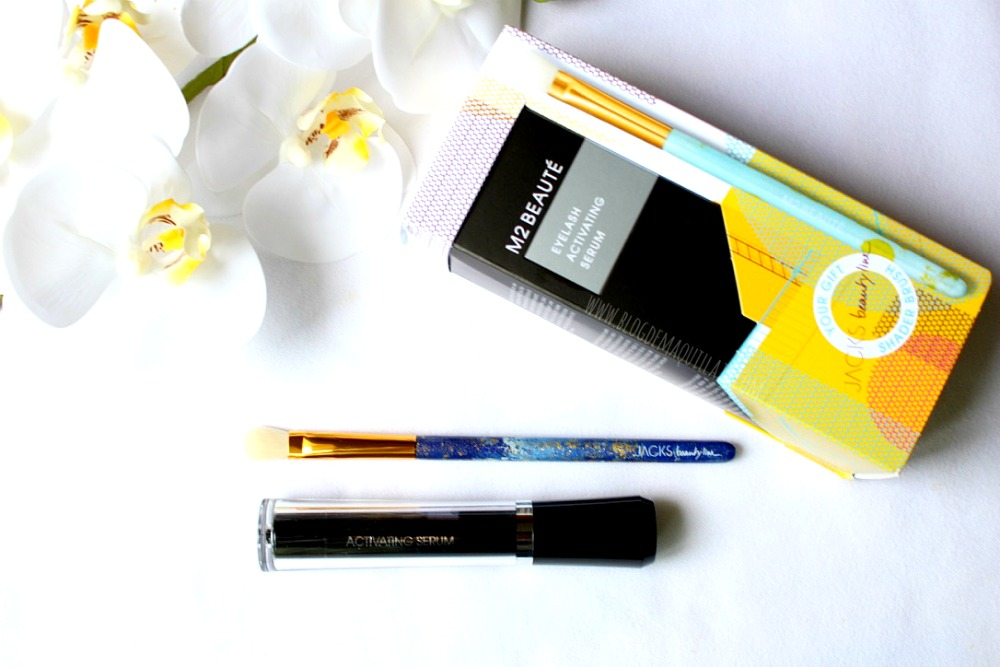
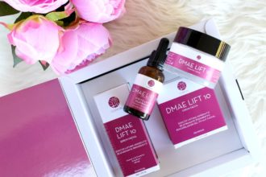
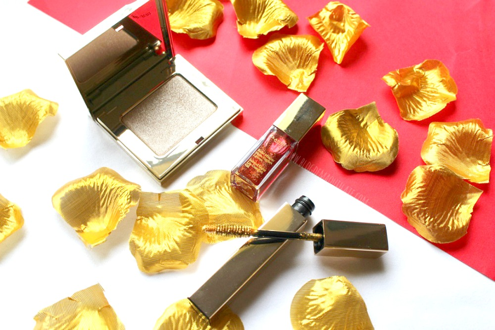
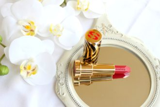
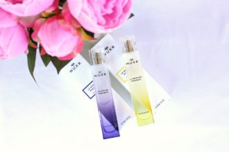
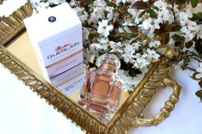
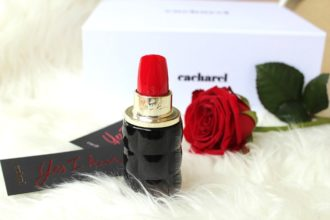

Top
DIPPING, EL ESMALTADO SEMI PERMANENTE SIN LÁMPARA

EL SÉRUM DE M2 BEAUTÉ PARA UNAS PESTAÑAS INFINITAS

DMAE LIFT 10 DE SEGLE CLINICAL: SOLUCIONES ANTIAGING
Maquillaje

SHIMMER & SHINE: LA COLECCIÓN DE MAQUILLAJE DE NAVIDAD DE CLARINS

LE PHYTO ROUGE DE SISLEY, LA BARRA DE LABIOS PERFECTA
¿CÓMO MAQUILLAR LOS OJOS AZULES? LAS MEJORES TÉCNICAS
Perfumes

NUEVOS PERFUMES NUXE

MON GUERLAIN FLORALE

PERFUME DE CACHAREL